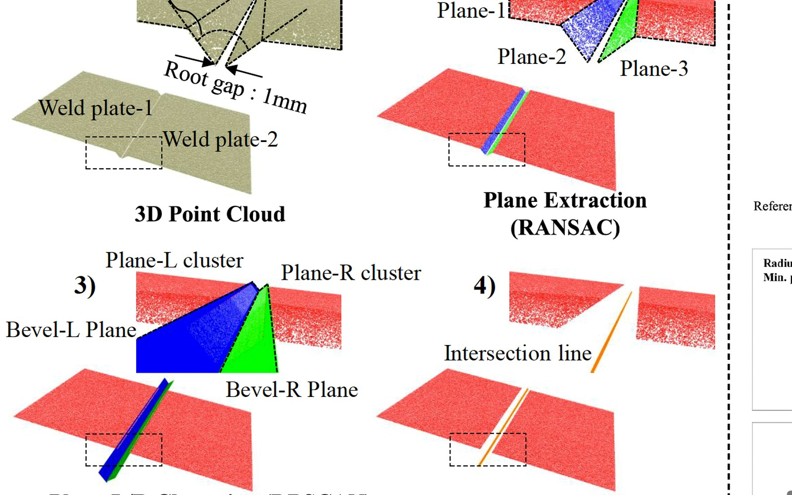
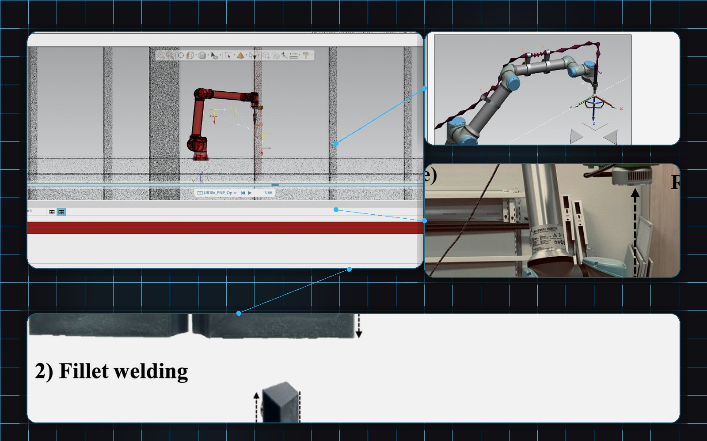
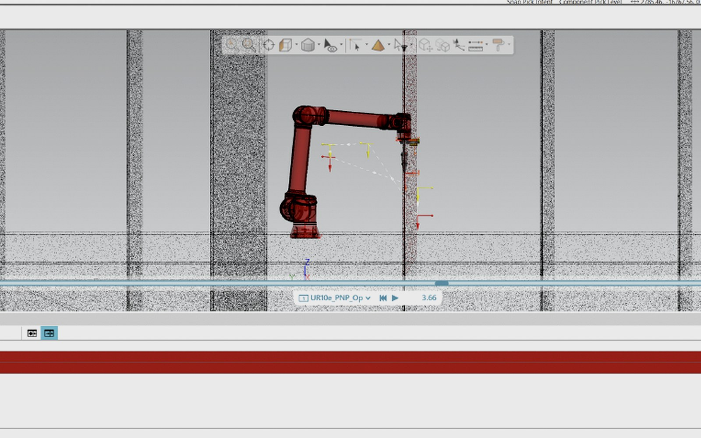
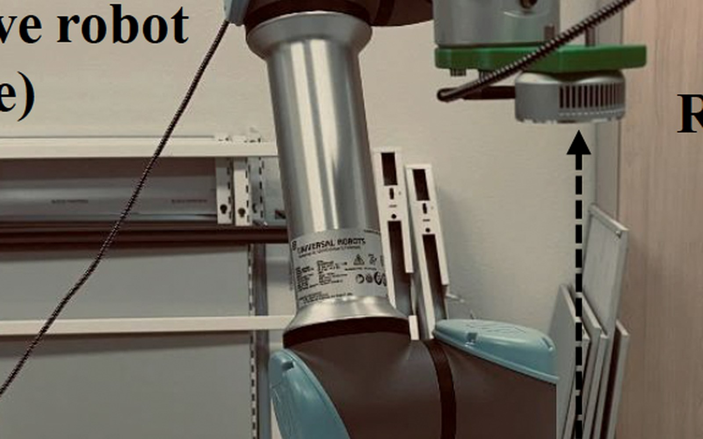

Capture
Point clouds, photos, CAD references, and workspace constraints are captured as one project dataset.
Connecting 3D scan data to field decisions and execution data
Optimize3D is a field-focused 3D point-cloud data company that connects spaces in shipbuilding, offshore, manufacturing, and construction sites to AI analysis, quality decisions, reverse engineering, and robotics.
Manufacturing Data Stack
Shipyard and manufacturing spaces become 3D data, then AI analysis connects them to inspection, reverse engineering, and robot execution.
Point clouds, photos, CAD references, and workspace constraints are captured as one project dataset.
AI object recognition, spatial reasoning, and deviation analysis extract field decision data.
Quality decisions are connected to CAD, jigs, 3D-printed test pieces, and robot execution data.
Data Transformation
Switch between field capture, AI analysis, quality inspection, and execution deliverables.

Capture
Ship blocks, cargo holds, molds, piping, and workspaces are grouped with point clouds, photos, and CAD references.

Analyze
Structures and parts are segmented, then object relationships, accessibility, and collision risks are calculated.

Decide
CAD deviations, tolerances, inspection priority, and release or hold evidence are organized into reports.

Physical AI
Workspace point clouds, object positions, accessibility, collision candidates, and 3D vision conditions become robot path, welding, and transport validation data.
Applied Cases
Examples where shipyard and manufacturing scan data became inspection, recognition, and automation outputs.
Shipyard container ship cargo-hold point clouds are used to recognize structures and working spaces, then object segmentation, spatial relationships, and inspection criteria are organized into automation-ready data.

For shipyard LNGC cargo-hold flatness measurement, deep-learning point-cloud processing and post-processing were applied to detect and separate scaffolding systems.

Scan data from small vessels and production molds was compared against reference geometry to validate dimensional control and process improvement opportunities.

Ship-block point clouds, 3D vision sensors, and 3D-printed test pieces are connected to validate robot paths, collision risk, accessibility, and weld-line extraction feasibility.

Business Area
Before adopting a large commercial package, teams can validate inspection feasibility, automation potential, and fabrication support through a focused pilot.
Target scanning, registration, reference coordinates, CAD comparison, deviation maps, and inspection item definition.
Scan-based CAD reconstruction for parts, molds, and structures with insufficient drawings.
Point-cloud segmentation, 3D object recognition, defect candidate detection, and spatial relationship reasoning.
Deviation, GD&T, before-and-after welding deformation, and decision evidence organized into reports.
3D printed jigs, fixtures, and prototype parts for inspection, assembly, and temporary positioning.
Point-cloud workspaces converted into robot paths, collision checks, vision-sensor conditions, and field execution data.

Spatial AI Engine
Based on OPTLab research in LNGC cargo-hold object detection, shipyard 3D deep-learning datasets, and ship-block support installation accuracy inspection, point-cloud data is converted into meaningful field-decision data.
Shipyard point clouds are separated into field object groups such as ship blocks, shops, racks, supports, and scaffolds.
LNGC cargo-hold scaffolding, block supports, and workspace structures are detected to separate measurement targets from exclusions.
FPFH, TDA, and density analysis reduce large-scale point clouds and strengthen reliable geometric features.
Deviation maps, installation accuracy, weld-line candidates, and robot accessibility are connected to reports and Physical AI data.
Physical AI Execution
Optimize3D does not stop at visualizing a 3D scene. We convert field spaces into accessibility, collision risk, robot posture, 3D vision, and weld-line candidate data that robots and sensors can use.
Complex spaces such as ship-block interiors are structured as point-cloud environments with robot access constraints.
Collaborative robot paths, cable interference, worker access, and collision candidates are checked as simulation data.
RealSense-class 3D vision sensors, lighting, and distance conditions are validated against the target task.
Weld-line and surface extraction, robot input coordinates, test pieces, and validation reports are packaged for field review.

Operating Model
We move beyond simply checking 3D scan outputs by turning scan data into intelligent AI-driven inspection, reverse engineering, quality decision, and Physical AI execution data.
Point clouds, CAD, photos, criteria, and site constraints are collected.
Coordinate systems, reference geometry, tolerances, and decision items are defined.
Deviation maps, features, object segmentation, spatial reasoning, and report formats are validated.
Inspection reports, CAD reconstruction, jig concepts, and Physical AI execution data are delivered.
Productized Pilot
Optimize3D packages equipment operation, point-cloud processing, reference alignment, decision logic, reports, fabrication data, and robot input data into one project scope.
Applications

Targets, equipment, registration methods, and quality criteria are optimized for each site and scanning scale.

Structures and parts are segmented from point clouds to organize defect candidates, deviation, and inspection priority.

Before-and-after welding dimensions, flange alignment, angular deviation, and length changes are compared from scan data.

Scan-based shape analysis and CAD reconstruction support interference, gap, and connection checks.

Laser scanning, photogrammetry, and image mapping are combined to create realistic 3D models and alignment data.

Point-cloud workspaces become robot paths, collision checks, 3D vision conditions, and field execution data.
Technical Backbone
Optimize3D uses OPTLab's joint shipyard and manufacturing research base in 3D scanning, quality control, reverse engineering, machine learning, additive manufacturing, and collaborative robotics.
Contact
A point cloud, CAD file, photo set, inspection criterion, or field issue is enough to define a pilot scope.